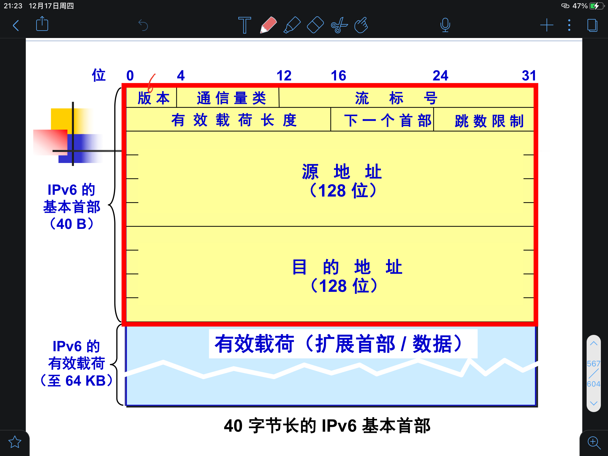

内容贼多
网络层提供的两种服务
- 网络层向运输层提供服务
- 网络保证可靠 or 端系统保证可靠
网络负责可靠交互
- 虚电路
- 和电路交换类似，都需要建立连接，有电路交换的特点
- 但是电路交换具有排他性，虚电路没有，所以称为虚电路
- 虚电路建立逻辑上的连接，分组沿着逻辑上的连接进行分组转发
网络负责最大努力交互
因特网真正的设计思路
不提供服务质量的承诺，只进行最大努力、无连接的数据报服务
可能出错、丢失、重复、失序
出错由ICMP解决
尽最大努力交付的好处
- 路由器可以比较简单，价格低廉
- 运输层负责差错处理、流量控制
- 网络的造假大大降低，运行方式灵活，能适用多种应用
虚电路与数据报的对比
| 虚电路 | 数据报 | |
|---|---|---|
| 思路 | 网络保证可靠通信 | 端系统保证可靠通信 |
| 连接 | 有 | 无 |
| 终点地址 | 只有建立连接时使用 | 每个分组都有终点的完整地址 |
| 分组转发 | 同一条虚电路的分组按照同一路由进行转发 | 每个分组独立选择路由进行转发 |
| 当节点故障时 | 所有通过故障接待您的虚电路均不能工作 | 出故障的节点可能会丢失分组，一些路由可能会发生变化 |
| 分组的顺序 | 总是按照顺序到达终点 | 到达顺序不一定按照发送顺序 |
| 差错处理 / 流量控制 | 可以由网络负责， 也可以由主机负责 | 主机负责 |
IP
配套使用的三个协议
- 地址解析协议 ARP
- Address Reesolution Protocol
- IP地址转换为MAC地址
- IP协议族的较下层
- 网际控制报文协议 ICMP
- Internet Control Message Protocol
- 控制信息
- IP协议族的较上层
- 忘记组管理协议 IGMP
- Internet Group Management Protocol
- 实现多播/组播
- IP协议族的较上层
中间设备
- 扩展
- 转发器 物理层
- 网桥 数据链路层
- 互联
- 路由器 网络层
- 桥路器 网桥+ 路由器
- 网关 网络层以上
虚拟互联网络
又称逻辑互联网络，当互联网上的主机进行通信时，好像在一个网络上通信一样，虽然不同物理网络的异构性客观存在，但是被屏蔽掉了，对于用户而言，只能看到像在同一个网络上通信而看不到异构细节。
IP地址
- 32位二进制，四个点分十进制数，每个数取值在0 - 255
- 定义为 网络号+主机号
- 8位一组
分类
- A类
- 第一位一定是0，前8位（一个字节）表示网络号，后24位表示主机号（三个字节）
- 一个网络中主机数最多有$2^{24} - 2 = 16777214$
- 最大网络数$2^7 - 2 = 126$
- 全零作为保留地址，意为本网络，不能指派
- 全一作为环回测试地址，不能指派
- 前8位 1 - 127
- B类
- 前两位一定是10，前16位（两个字节）表示网络号，后16位表示主机号（两个字节）
- 一个网络中主机数最多有$2^{16} - 2 = 65534$
- 最大网络数$2 ^ {14} = 16384$
- 最小网络号为 128.0
- 二进制为 1000 0000 . 0000 0000
- 前8位 128 - 191
- C类
- 前三位一定是110，前24位（三个字节）表示网络号，后8位表示主机号（一个字节)
- 一个网络中主机数最多有$2^{8} - 2= 254$
- 最大网络数$2 ^ {21} = 2097152$
- 最小网络号为 192.0.0
- 二进制为 1100 0000 . 0000 0000 . 0000 0000
- 前8位 192 - 223
- D类
- 前四位一定是1110，用于多播地址
- 前8位 224 - 239
- E类
- 前四位为1111，留作以后使用
- 前8位 240 - 255
保留

| 网络号 | 主机号 | 用作源地址 | 用作目的地址 | 含义 |
|---|---|---|---|---|
| 0 | 0 | 可 | 不n可 | 本网络的本主机，相当于临时牌照，申请IP地址时使用 |
| 0 | host-id | 可 | 不可 | 本网络的某台主机 |
| 全1 | 全1 | 不可 | 可 | 只在本网络进行广播，所有路由器不进行转发 |
| net-id | 全1 | 不可 | 可 | 网络外成员对net-id中的的所有成员进行广播 |
| 127（0111 1111） | 非全零全一 | 可 | 可 | 本地软件环回测试 |
私有地址
10.0.0.0 ———— 10.255.255.255
(0000 1010 . 0000 0000 . 0000 0000 . 0000 0000 —— 0000 1010 . 1111 1111 . 1111 1111 . 1111 1111)
172.16.0.0 ———— 172.131.255.255
(1010 1100 . 0001 0000 . 0000 0000 . 0000 0000 —— 1010 1100 . 1000 0011 . 1111 1111 . 1111 1111)
192.168.0.0 ———— 192.168.255.255
(1100 0000 . 1010 1000 . 0000 0000 . 0000 0000 —— 1100 0000 . 1010 1000 . 1111 1111 . 1111 1111)
重要特点
- 分等级
- IP地址管理机构分配IP只分配网络号，主机号由网络号管理单位自行分配
- 路由器仅仅根据目的主机所连接的网络号来转发分组
- 这样就可以大大减少路由表的大小
- 找到了网络，再找主机就很容易了
- IP地址标志一个主机 / 路由器 / 链路的接口
- 路由器属于不同网络的接口有不同的IP地址
- 至少有两个不同的IP地址
- 网桥连接的若干局域网仍拥有相同的网络号，仍属于同一个网络
- 网桥 / 转发器仅仅是扩展网络
- 只包含一段线路的网络不指明IP地址
IP地址与硬件地址
这里说硬件地址而不是MAC地址，因为链路层及以下使用的的硬件地址有很多种，其中以太网使用MAC地址
MAC地址 $\in$ 硬件地址
- 路由器转发不改变IP源和目的，但是改变MAC源和目的
- 网桥转发不改变MAC源和目的
- 路由器转发改变了链路
- 数据包中间经过的路由器的IP不会出现在IP数据报的首部中
- 虽然首部有源站，但是路由器仅根据目的站的IP的网络号进行转发
- 只找到网络就行
地址解析协议 ARP Address Resolution Protocal
- 从网络层使用的IP地址解析出链路层使用的硬件地址
- 每个主机都有一个ARP Cache，里面有所在局域网上的各个主机和路由器的IP地址到硬件地址的映射表
- IP Address；MAC Address；TTL (Time to live) 使用老化策略，过久不使用的地址会被删除
- 能够减少ARP广播的数量
- 发送过程
- 向本局域网中的主机发送
- 有就把目的MAC地址写入MAC帧
- 没有就本地广播发送一个ARP请求分组，目的主机响应，把目的主机的MAC地址加入ARP Cache
- 本地广播：路由器不转发；链路层广播，MAC地址全1
- ARP请求分组：发送方硬件地址 / 发送方IP地址 / 目标方硬件地址 未知时填零/ 目标方IP地址；所有主机都会记录下发送方的硬件地址
- ARP响应分组：发送方硬件地址 / 发送方IP地址 / 目标方硬件地址 / 目标方IP地址；是广播实现的一对一通信
- 如果目的主机和源主机不在同一个局域网，发送主机获得的就不是真正目的主机的MAC地址，而是能通往目的主机的路由器的IP地址。此后发送主机发往目的主机的所有帧，都将发往该路由器，通过它向外发送。这种情况称为委托ARP或ARP代理（ARP Proxy）。
- 为什么不使用硬件地址进行通信
- 异构网络很多，互相通信需要进行复杂的地址转换
- IP使得所有网络像连接在同一个网络一样，把脏活累活交给ARP去做
IP数据报的格式

首部、数据
首部包括固定部分20字节，可选部分长度不定，总共不超过60字节
- 版本 4位
- 0100 IPv4 0110 IPv6
- 首部长度 4位
- 最大表示15个单位，一个单位4字节，所以首部最长60字节
- 区分服务 8位
- 总长度 16位
- 首部长度 + 数据长度
- 单位为字节，因此数据报最大长度为$2^{16} - 1 = 65535$字节
- 总长度不能超过MTU
- 标识 16位
- 长度超过MTU则需要分片
- 分片后标识来自同一个数据报
- 标志 3位
- 目前只有前两位有意义
- 最低位是MF（More Fragment），中间一位是DF（Don’t Fragment）
- MF=0 没有分片了
- DF=0 允许分片
- 片偏移 13位
- 表示某片在原分组中的相对位置
- 以8字节为偏移单位，需要乘八，也就是左移三位，正好补上标志部分三位的空缺
- 生存事件TTL 8位
- 每经过一次路由转发，减少一，变成零了还没到目的就丢弃
- 协议
- 指出为谁服务，上层协议是什么
- 首部检验和 16位
- 验证首部在传输中有没有出现差错
- 二进制反码求和
- IP不检验数据部分，扔给链路层做
- 源地址、目的地址 各32位
- 可变部分
- 最大40字节，需要使长度为4的整数倍，不足则用零填充
- 其实很少用
IP数据报分片
IP分片不是一件好事情，应该能不分就不分
分片之后有哪些字段会变
- 总长度
- 报头检验和
- MF位
- 片偏移
分片的坏处
- 效率低
- 需要缓存
- 防火墙可能会拦截
二进制反码求和
- 此反码非计组之反码 （ones’ complement）
- 计组中的反码 正数的反码是本身 负数的反码是符号位不变，其余位取反
- 逐位取反之后再相加（再取反）
- 最高位的进位加在最后一位上 (回卷)
- 这样可以使得先加后取反和先取反后加的结果一样
- 不依赖大端表示 / 小端表示
- 交换十六位数的字节顺序，得到的结果相同，只是字节顺序也相应发生变化
转发分组的流程
特定主机路由
将IP数据报发送到特定的某个主机上，而不是发送到网络上就结束了
默认路由
路由表中的Default项，不在匹配其他任何项时按照默认路由进行转发
可以减少路由表中的条目数
划分子网与构造超网
划分子网
- 网络号、主机号的两级IP 变为网络号、子网号、主机号的三级IP
- 网络号侵占主机号
- 因为全零全一不允许使用，每划分一个子网就会废掉两个IP
- 子网号的位数不能为0、1、15、16
- 为0则没有划分子网
- 为16则没有主机
- 为1则网络号要么0要么1，不允许使用
- 为15则主机号要么0要么1，不允许使用
- 定长子网划分、变长子网划分
一个问题
一个C类IP，划分为四个子网，分别在全零全一可用 / 不可用的时候损失了多少IP？
四个子网需要两个位的子网号，剩余六个位的主机号
网络号为00， 01， 10， 11，全零全一不可用，只剩下01， 10两个网络
子网掩码
- 用于找出IP地址中的子网部分
- 前面为1， 主机号部分为0，与IP做按位与运算，可以去掉主机号
- 最小IP网络的子网掩码是多少
- 255.255.255.252
- 留出两位作为主机号，00， 01， 10， 11个主机，全零全一不让用，只有两台主机，其中一台是路由器
构造超网 无分类编址CIDR 路由聚合
无分类域间路由选择 Classless Inter-Domain Routing
- 取消了传统ABC类网络，改用网络前缀来代替网络号与子网号
- 主机号侵占网络号
- 又变成两级编址
- 可以把多个C类网络合并，相当于侵占网络号
- 使用斜线记法，斜线后面表示网络前缀所占的位数
- 数值上对应三级编址中子网掩码的1的位数
- 仍然使用掩码
- 路由表中的一个项目可以表示很多传统分类的路由
构造超网的规则
- 构成超网的地址块数必须是$2^n$
- 构成超网的地址快必须连续
- 第一个地址的第三字节必须能被块数整除
一些问题
- 超网的网络地址能不能是X.Y.33.0？
- X.Y.00100001.0，发现主机号只有最后一个字节，相当于C类网络，没有聚合，也就不能叫超网
- X.Y.32.0 能不能确定网络
- X.Y.00100000.0，不能确定主机号的零从哪里开始
- 必须加上掩码/斜线才能确定网络号
查找路由表
最长前缀匹配
匹配路由表中最长的那个，因为越长越具体，有特定主机路由就不用网络前缀路由，有网络前缀路由就不用默认路由
路由器取出IP分组中的目的地址，与前缀对应的掩码进行按位与运算提取到网络号，进行匹配
二叉线索
是一棵Trie
Trie上的前缀是唯一的，进行唯一前缀匹配
唯一前缀匹配不等价于网络前缀匹配
ICMP
ICMP在IP之上，ICMP报文作为IP报文的数据部分，也要被封装成IP数据报
格式
1字节类型，1字节代码，2字节检验和
4字节ICMP数据部分，长度可变
ICMP差错报文
长度为36字节
在收到错误的IP数据报后发送，也要封装为IP数据报
（封装后的IP数据报）数据部分是ICMP的前8字节 + 收到的IP数据报的首部 + 8字节，为TCP / UDP的端口号
因为要判定端口不可达
不需要发送ICMP差错报文的几种情况
- 不再为ICMP差错报文发送ICMP差错报文 / 禁止套娃
- 只对分片中的第一片发送 / 一个错各个错
- 多播地址的数据报不发送
- 特殊地址（127.0.0.0 / 0.0.0.0）不发送
分类
- 终点不可达
- 某一环无法继续传递，向发送方发送终点不可达
- 报文中的数据表示失败的原因
- 不可达有五种情况
- 网络不可达
- 主机不可达
- 协议不可达 //无法向上提交
- 端口不可达
- 需要分片但DF位为1
- 源路由失败
- 时间超过
- TTL减到0
- 某些分片迟迟不来，组装出问题
- 参数问题
- 头部参数出错，Pointer部分会指出错误的字节位置
- 源点抑制
- 流量过大，缓存队列溢出，只能丢弃报文，此时发送一个ICMP源点抑制，告知发送方晚点再来
- 改变路由 / 重定向
- 找不到目的地址
ICMP询问报文
长度为40字节
分类
- 回送请求和回答
- ping
- 时间戳请求和回答
- 查询当前时间，提供毫秒级的分辨率
- 包含三个时间戳 ：Origin时间、Receive时间、transmit时间 （接收方发送回应的时间）
- 即使不同步也能计算正确的往返时间
源路由
从源路由网桥中提到过，指从源点就确定的路由
应用
ping
- ping非常特殊，应用层直接使用网络层，不经过运输层
trace route
发很多次，第一次发TTL是1，第二次发TTL是2，以此类推，每一次路由器都会给出一个超时
当到达目的主机时没法发送超时了，此时设置的一个不可达的UDP端口使得目的主机发送终点不可达
因此trace route 用到了运输层
路由选择协议
理想的路由算法
- 正确、完整
- 计算上简单
- 能适应通信量和网络拓扑的变化
- 稳定性，路由不应该不停变化
- 公平，除了少数优先级高的用户 / 区分服务
- 算法应该是最佳的 / 相对概念，特定约束下的较为合理的选择
分类
静态路由 简单开销小，但是不能及时适应网络状态变化
动态路由 复杂开销大，但是能较好适应网络状态的变化
内部网关协议 IGP AS内部使用
外部网关协议 EGP AS之间使用
分层次的路由选择协议
Autonomous System 自治系统
把AS内的网络看作一个整体，屏蔽内部细节和采用的路由协议
一个AS对其他AS表现出一个单一的一致的路由选择策略
RIP Route information protocol
是一种内部网关协议
分布式的基于距离向量的路由选择协议
每经过一个路由器距离加一，距离向量的距离指的是最短距离 / 经过路由器的数目最少
RIP简单粗暴的把距离短的路由认为是好的路由，允许一条路径最多包含15个路由器，距离超过15就标记为不可达
不存在负载均衡，有两条长度一样的路径也只会走其中一条
工作方式为每隔固定的一段时间和相邻路由器交换自己的路由表
- 三分钟没收到消息就认为不可达，距离设置为16
- 收到之后总总是要更新，距离可能增大也可能减小，应该以最新的更新
能很快收敛 / 所有路由器达到一致
- 路由表一致性不等于路由表表项相同
路由表包括目的网络（大方向） 距离 下一跳路由器（小方向）
RIP2报文格式
RIP2要封装到UDP中再封装到IP中，RIP是应用层协议
四字节首部，路由信息20字节，最多25个，总长度最大4 + 20 * 25 = 504字节，超过则启用新的RIP2报文
RIP2和RIP1（最大的）的区别是RIP2支持子网
路由标记表示是否再同一个自治系统中，填写的是自治系统的编码
问题与解决方案
- 水平分割
- 从某个接口学到的路由不会再发回去，防止了路由环路
- 毒性逆转
- 当路由信息变成无效后不是直接删除而是设置为不可达并广播出去，可以清楚路由表中无用的路由
- 触发更新
- 路由信息改变后立即更新并发送给相邻路由器
- 抑制计时
- 如果一条路由更新的跳数大于路由表已记录的该路由的跳数，那么将会引起该路由进入长达180秒（即6个路由更新周期）的抑制状态阶段。在抑制计时器超时前，路由器不再接收关于这条路由的更新信息。可以用来防止路由环路。
OSPF Open Shortest Path First
是一种内部网关协议
分布式的，基于链路状态的路由选择协议
工作在网络层，在IP之上，直接使用IP数据报进行传送
使用Djijkstra算法
需要一张完整的网络图，来跑Dijkstra算法
所有的路由器都维护一个完整的链路状态数据库 / 全网的拓扑结构图
所有路由器的数据库都是完全一致的，和RIP中的一致不同
OSPF收敛很快
三个要点
- 使用泛洪法向自治系统内的所有路由器发送信息
- 发送与本路由器相邻的所有路由器的链路状态
- 与谁相邻，代价是多少
- 只有链路状态发生变化时，路由器才使用泛洪法向所有路由器发送信息
划分区域
自治系统通常贼大，需要维护的数据库也就会变大，因此在自治系统的基础上进一步划分区域（Area），这样就只需要在区域内泛洪、维护区域的拓扑结构图
每个区域用一个32位的区域标识符来表示，和IP一样使用点分十进制
使用层次结构的区域划分，上层的区域叫做主干区域，标识符为 0.0.0.0，主干区域联通下层区域
位于主干区域中的路由器称为主干路由器（BR）
位于区域边缘，与其他区域通信的路由器称为区域边界路由器（Area Border Router)
特点
- 数据报很短
- 减少路由信息的通信量，网络最主要的功能还是处理端系统的消息
- 不必将长的数据报分片传送，有效减少重传
- 具有多路径负载均衡
- 具有鉴别功能
- 保证了仅在可信的路由器之间交换链路状态信息
- 支持变长子网划分和CIDR
- 每一个链路状态都有一个32位的序号，序号增长不超过五秒钟一次
- 每隔一段时间刷新数据库中的链路状态
- 互联网规模很大时，OSPF要比RIP好很多，对网络变化的响应很快不存在坏消息传得慢的情况
指定路由器
在一个广播性、多路访问的网络中，如果每个路由器都独立进行链路状态更新包的交换，就会产生巨大流量，不好，因此选举出一个村长来进行链路状态信息的交换。
有DR（Designated Router)）和BDR（Backup Designated Router）
分组格式
- 版本
- 当前版本为2，版本一版本二不兼容
- 类型
- Hello
- 每隔十秒交换一次问候分组，从而得知有哪些路由器是可达的
- Database Description
- Link State Request
- Link State Update
- 收到更新报文后需要恢复ACK
- Link State Acknowledgment
- Hello
- 分组长度
- 包括OFSF头部的分组长度
- 路由器ID
- 在AS中可以唯一表示路由器
- 区域ID
- 指定分组所属的区域号
- 校验和
- 用于分组所有内容的校验和
- 鉴别1
- 0或1，表示不鉴别和使用口令鉴别
- 鉴别2
- 鉴别1为0时为0，鉴别1为1时为口令
BGP Border Gateway Protocol
外部网关协议
目前版本为4
难以寻找最佳路由，只在AS之间交换可达性信息，找到一条不兜圈子的比较好的路由
基于路径向量的路由选择协议
每个AS至少要有一个BGP发言人，每个发言人都要属于一个AS
作用于不同AS，但同一个AS中的不同边界路由器也需要建立BGP连接
BGP支持CIDR
是应用层协议，使用TCP进行传输
- 对于远距离的传输，需要使用TCP保证可靠性
BGP热土豆路由选择协议
热马铃薯路由选择（Hot-potato routing）是在当前AS接收到一个数据包后，使其停留在该AS中的时间尽可能短。它尝试减少当前AS的开销，而忽略了网络中其他组成成分的开销。
将分组发给最近的网关路由器，用尽可能最低开销将分组送出其所在 AS。
AS的分类
单口AS，只有一个连接可以到达另一个AS，只能是信源或信宿
多归路过渡AS，有多个连接到达多个AS，但是拒绝传送流量，只能是信源或信宿 / 拒绝通信量穿越的多归属AS
过渡AS，不允许通信量穿越的多归属AS
BGP报文
OPEN 与相邻的另一个BGP发言人建立关系 / 打招呼
UPDATE 发送某一路由的信息，列出要撤销的多条路由 / 有新闻
KEEPALIVE 确认打开报文与周期性证实临站关系 / 表明自己还活着 / 只有报文头
NOTIFICATION 发送检测到的差错 / 不跟你玩了
标记部分用于鉴别，但是现在没有鉴别方案，全部置为1
长度为包括首部在内的总长度
类型为1-4，上述的四种类型
一个问题
KeepAlive报文在链路层是否需要进行填充？
KeepAlive只有报文头，16 + 2 + 1 = 19 字节
作为TCP的数据部分，需要加上TCP的首部 19 + 20 = 39 字节
作为IP的数据部分，需要加上IP的首部 39 + 20 = 59 字节
MAC帧在长度小于46字节时才进行填充，因此不需要进行填充
以太网最短帧长为64字节，减去16字节头部，4字节FCS，数据部分最短46字节
IP多播
路由器
多输入端口，多输出端口
作用是转发分组
路由选择协议生成路由表，路由表生成转发表
多播特点
使用组地址，D类地址
永久组地址
动态组成员
使用硬件进行多播
IP多播地址与以太网多播地址的转换
01 + 00 + 5e + 0 + 组播IP低23位
一个例子
226.150.47.33
首先确定D类IP，D类IP从224到239
写出后三个字节的二进制
150 = 128 + 16 + 4 + 2 = 1001 0110
47 = 32 + 16 - 1 = 0011 0000 - 1 = 0010 1111
33 = 32 + 1 = 0010 0001
把正数第二字节第一位换成0，因为只要后23位
0001 0110 = 16
0010 1111 = 2F
0010 0001 = 21
最终结果为 01 00 5e 16 2F 21
IGMP Internet Group Management Protocal
使路由器知道多播组成员的信息
看作IP的一个组成部分
IGMP的本地使用范围
并非 在因特网范围内对所有多播组成员进行管理的协议
IGMP 不知道IP多播组包含的成员数，也不知道这些成员分布在哪些网络上
IGMP是让连接在本地局域网的多播路由器知道本剧于网上是否有主机参加或退出了多播组
为什么多播路由选择协议比单播路由选择协议复杂得多
多播转发必须动态适应多播组成员的变化，而单播通常是在网络拓扑发生变化时才需要更新路由
多播路由器在转发多播数据报时，不能仅仅根据多播数据报中的目的地址，还要考虑这个多播数据报从哪里来到哪里去
多播数据报可以从没有加入多播组的主机发出，也可以通过没有组成员接入的网络
IGMP两个阶段及具体措施
第一阶段
新主机加入多播组，先向该组的多播地址发送IGMP报文，表明自己要加入，多播路由器收到之后将组成员关系转发到因特网上其他多播路由器，以完善多播路径
第二阶段
周期性探询本地局域网的主机，确认是否是该组的成员，只要有一个响应认为是活跃的，多次没有响应就不再将组成员关系转发给其他路由器
具体措施
使用IP多播
探寻组成员关系时对所有组发送一个请求信息的询问报文（而不是每个组一个）
主机收到询问后随机选择一个时延进行发送
如果组内有其他主机发送了，自己就可以不发送了
多播路由选择的三种方法
多播路由选择实际上是要构建以源主机为根节点的多播转发树
洪泛与剪除
RBP Reverse Path Broadcasting
洪泛适用于较小的多播组，为了避免兜圈子，使用了反向路径广播Reverse Path Broadcasting的策略
剪除指发现下游树枝上没有多播组成员时，把它和下游树枝一起在转发树上剪除
隧道 <第一个隧道>
把多播报文封装为单播，使用单播通过不支持多播的网络，出来之后再恢复成多播
基于核心的发现技术
对每一个多播组指定一个核心，核心路由器构建转发树
RPB特点
路由器收到多播数据报时，先检查它是否是从源点经最短路径传送来的：
若是，就向所有其他方向转发刚才收到的多播数据报（但进入的方向除外 ）
否 则 ， 就 丢 弃 而 不 转 发。
如果 存 在 几 条 同 样 长 度 的 最 短 路 径 ， 那 么 只 能 选 择 一 条 最 短 路 径 ， 选 择 的 准 则 就 是 看 这 几 条 最 短 路 径中的相邻路由器谁的 IP 地址最小。
最终得出多播转发树，以后就按其转发多播数据报
VPN Virtaul Private Network
利用公用的互联网作为本机构各专用网之间的通信载体
所有通过互联网传送的数据都必须加密
使用 隧道技术 来实现 <第二个隧道>
机构内部的VPN为内联网（intranet），不同机构共同建立的VPN为外联网（exrtanet）
NAT Network Address Translation
专用网中的主机需要与外部进行通信，需要通过NAT路由器将私有地址转换为全球地址
转换结果需要记录在NAT地址转换表中
每次通信需要进行两次转换，离开时一次，进入时一次
对于有$n$个全球IP地址的NAT路由器，最多可以同时有$n$台主机接入到互联网
专用网内部的主机不能作为服务器

NAPT Network Address and Port Translation
多个主机公用一个NAT路由器上的全球IP地址
把专用网内部的不同IP地址转换为相同的全球IP地址，源主机采用的TCP端口号不管相不相同都转换为不同的新的端口号
MPLS Multi Protocol Label Switching
属于2.5层协议，是IP的一种增强
多协议 表示MPLS的上层可以采用多种网络协议、下层可以采用多种链路层协议
标记 表示每类分组被打上一个标记，根据标记对分组进行转发
**面向连接**传统的路由决策，路由器需要对网络数据包进行解包，再根据目的IP地址计算归属的FEC。
而MPLS提出，当网络数据包进入MPLS网络时，对网络数据包进行解包，计算归属的FEC，生成标签（Label）。
当网络数据包在MPLS网络中传输时，路由决策都是基于Label，路由器不再需要对网络数据包进行解包。
每类分组会有一个特定的编号
MPLS特点
- 分类意味着面向连接，标记一旦确定，连接的路径就确定了
- 支持流量工程，平衡网络负载
- 有效支持VPN
- 在转发是不上升到第三层查找转发表，而是直接在第二能用硬件进行转发
过程
- 使用LDP label distribution protocol交换报文，找到标记交换路径LSP
- 分组进入MPLS域时，在入口打上标记，按照转发表将分组发给下一个LSR
- 标记具有强烈的本地意义，仅在两个LSR之间才有意义
- 分组经过LSR要做两件事情，一是转发，二是标记对换
- 离开MPLS域时，MPLS出口节点把标记去除
- 这样的转发方式被称为显式路由选择
MPLS域
这个区域中所有路由器都支持MPLS技术，都是LSR Label Switching router
LSR既可以标记交换也可以路由选择，转发表被用来构造标记交换表
转发等价类FEC
如何划分转发等价类是MPLS的核心
转发等价类是LSR按照同样的方式对待的分组的集合
划分方式很灵活，通常由网络管理员来控制
通过设置不同的FEC可以实现负载均衡，也称为流量工程
例子
特定前缀进行匹配
源地址目的地址都相同
某种服务质量需求的（区分服务）
MPLS格式
在IP数据报被封装成以太网帧之前，先插入一个MPLS首部
生存时间用于防止兜圈子
LSP隧道 <第三个隧道>
IPv6
主要变化
允许协议继续扩充
支持即插即用自动配置
支持资源预分配
首部由四字节对齐改为八字节对齐
一般形式

- 版本
- 4位，目前版本6
- 通信量类
- 8位，相当于区分服务
- 流标号
- 有效载荷长度
- 下一个首部
- 8位，指向扩展首部，串出一个列表
- 跳数限制
- 8位
地址
128位
除Unicast、Multicast外支持Anycast
- 对于一组主机，只要找到最近的一个即可
- 发向一组，其中只要有一个接收到即可
使用冒号十六进制记法
允许把数字前面的0省略
一串零可以使用零压缩压缩成一对冒号，地址中只能压缩一次
CIDR斜线表示法仍然适用
特殊地址
::/128 未指明
::1/128 环回
FF00::/8 多播
FE80::/10 本地链路单播
v4 to v6
- 双协议栈
- 隧道技术 <第四种隧道>
- 把v6数据报封装进v4数据报